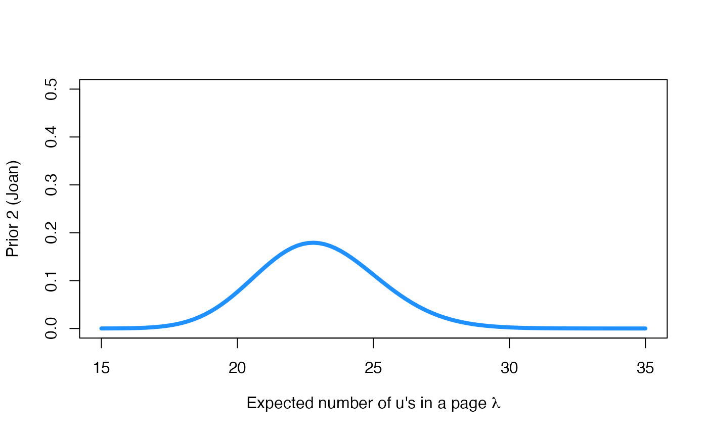
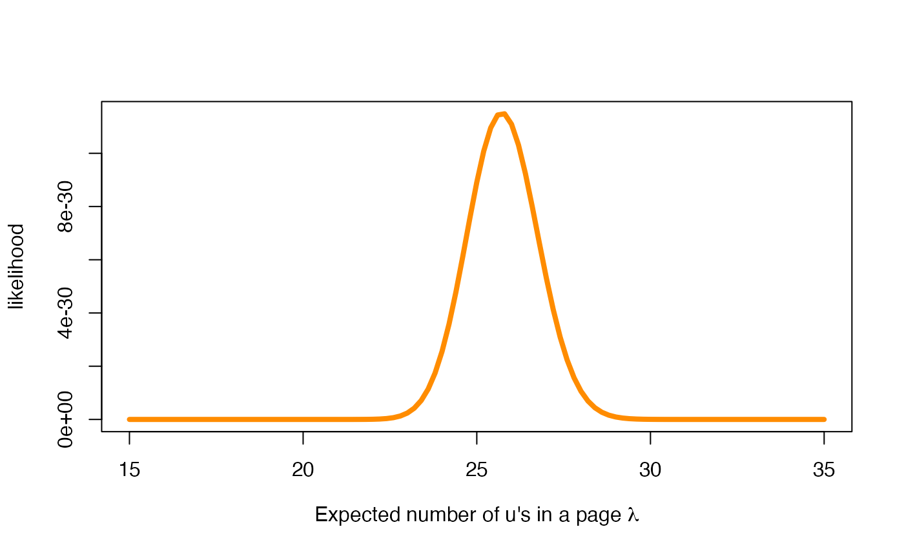
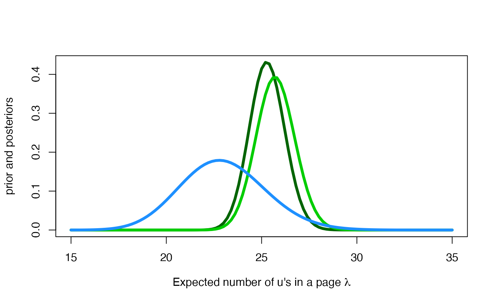
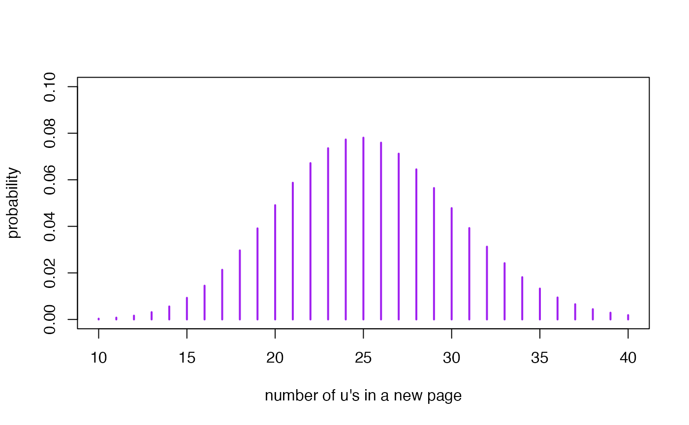

According to Wikipedia:
A Game of Thrones is the first novel in A Song of Ice and Fire, a series of fantasy novels by the American author George R. R. Martin. In the novel, recounting events from various points of view, Martin introduces the plot-lines of the noble houses of Westeros, the Wall, and the Targaryens. The novel has inspired several spin-off works, including several games. It is also the namesake and basis for the first season of the television series Game of Thrones.
If you want to get a bit of atmosphere, you can see a trailer of the series here and if you want the music of this series to accompany you throughout the practice you can go here.
In this practice we need to have imagination, possibly not as much as George R. R. Martin but a little. We have an English edition of the first novel, A Game of Thrones, and we are interested in learning about the mean number of letters u we can find on a page of this book. We select pages of the book at random and count the number of u’s on each page. The random sampling is with replacement in the sense that the same page could be selected more than once. If we each had the book we could physically conduct the experiment. But as this is not the case, we can use the following data
udata <- data.frame(Us = c(25, 29, 27, 27, 25, 27, 22, 26, 27, 29, 23, 28, 25, 24, 22,
25, 23, 29, 23, 28, 21, 29, 28, 23, 28))that we have obtained as a consequence of carrying out an experiment consisting of randomly selecting pages of the book and counting the number of u’s in each one of them.
We can summarize the results obtained by means of a table of frequencies and its graphical representation
(table.udata <- table(udata))
#> Us
#> 21 22 23 24 25 26 27 28 29
#> 1 2 4 1 4 1 4 4 4
barplot(table.udata, col="gray89", xlab="Number of letters u in a page")Let the random variable that describes the number of u’s in a page of the novel A Game of Thrones. We consider in this practice that, given , the distribution of the number of u’s is Poisson with rate
whose conditional probability function, expectation and variance are:
We know that this distribution is not exactly Poisson because the number of u’s that can possibly be printed in a page is necessarily limited, while the potential values of a Poisson variable are not bounded. Nevertheless, the Poisson distribution can be a useful model in practice.
Recall that the gamma distribution is conjugate with respect to the Poisson probability model. If we elicit a prior gamma distribution Ga for , its density is
with expectation and variance
We are going to work with two different prior distributions to learn a bit more about this Bayesian inferential process. We will work with a non-informative prior distribution (Prior 1) and with the prior distribution (Prior 2) provided by a friend of ours, Joan, who has read all books by George R. R. Martin.
The non-informative prior distribution is intended to be a neutral distribution that leaves the data in the spotlight. Let’s try to understand which views are expressed in Joan’s prior distribution. To do so, we calculate the mean and standard deviation and graphically represent his prior.
curve(
dgamma(x, 105.8, 4.6),
col="dodgerblue", lwd=4,
xlim=c(15,35), ylim=c(0,0.5),
xlab = expression(paste("Expected number of u's in a page ", lambda)),
ylab = 'Prior 2 (Joan)'
)
According to Joan, the prior expectation and standard deviation of is and the prior probability that is less than 20, 23, 25, 30 and 35 is:
The likelihood of is a function of whose expression requires the observed data , where is the total number of u’s observed in the n sampled pages. It is defined as follows
where represents the random Poisson variable that describes the number of u’s in the page . Note that the denominator is a scaling factor independent of , that we can ignore, since we are only interested in the relative likelihood of each possible value of . The rest of the expression, only depends on the total sum of observed values, and the number of pages examined.
In our case, we have sampled pages and have registered u’s, and consequently, the likelihood function is (up to the scaling factor)
sum_y <- sum(udata$Us)
n <- nrow(udata)
scale_y <- sum(log(factorial(udata)))
curve(
exp(sum_y * log(x) - n * x - scale_y),
col = "darkorange", lwd = 4,
xlim = c(15, 35),
xlab = expression(paste("Expected number of u's in a page ", lambda)),
ylab = 'likelihood'
)
The posterior distributions of for priors 1 and 2 are also gamma distributions with parameters
Next, we plot on the same graph the informative prior distribution from Joan (in blue) and the two posterior distributions, in dark green and in light green.
curve(
dgamma(x, 748.8, 29.6),
col = "darkgreen", lwd = 4,
xlim = c(15, 35),
xlab = expression(paste("Expected number of u's in a page ", lambda)),
ylab = 'prior and posteriors'
)
curve(
dgamma(x, 643.5, 25),
col = "green3", lwd = 4,
add = TRUE
)
curve(
dgamma(x, 105.8, 4.6),
col = "dodgerblue", lwd = 4,
add = TRUE
)
Interestingly, the two posterior distributions are quite similar despite the fact that the informative prior distribution is compatible with smaller lambda values than indicated by the data. The posterior mean and standard deviation of according to each posterior distribution are
95 credible intervals for according to posteriors 1 and 2 are
and the subsequent posterior probabilities that the mean number of letters u’s in a page of A Game of Thrones is between 24 and 26 letters are
Remember that the posterior predictive distribution for the result of a new observation is a Gamma-Poisson distribution GaPo with probability distribution where and .
Suppose now that we randomly select a new page (page 26th) in the novel and want to predict the number of letters u we will find in it. The subsequent posterior predictive distribution is if we work in the framework of the posterior 1 or if we work in the framework of the posterior 2. Now we represent both predictive distributions
library(extraDistr)
x <- c(10:40)
pred1 <- dgpois(10:40, 643.5, 25)
pred2 <- dgpois(10:40, 748.8, 29.6)
plot(
x, pred1,
type = "h", lwd = 2, col = "purple",
xlim = c(10, 40), ylim = c(0, 0.1),
xlab = "number of letters u in a new page",
ylab = "probability"
)
plot(
x, pred2,
type = "h", lwd = 2, col = "purple",
xlim = c(10, 40), ylim = c(0, 0.1),
xlab = "number of u's in a new page",
ylab = "probability"
) The graphs of both distributions are visually almost identical. The means and standard deviations are
It is important to note the large variability associated with the prediction process relative to the estimation process. This characteristic of the estimation and prediction processes is general to all inferential processes and statistical methodologies.
We propose below an individual exercise that pursues to consolidate the basic concepts that we have learned in the previous theoretical session and that we have been practising in this session.
Exercice
You just remembered that you have another friend, Tauriel, who is also very enthusiastic of the novel A Game of Thrones and you have thought to ask her opinion about the number of u’s in the novel. Her prior distribution for is very different from that of your other friend Joan. It is and we will call it prior 3.
How different are your two friends’ opinions on ? A good idea to answer this question would be to plot both densities and calculate the mean, standard deviation and some relevant probabilities from the subsequent prior distributions.
From the results of the previous experiment (u’s in a total of ), compare the posterior distribution for that Joan and Tauriel would obtain.
Joan and Taurel select new page from the novel. Before they start counting the u’s on the page, they ask you to calculate the predicted distribution of each of them over the number of u’s they will find on this page. Can you compute them? And since they are asking you to do some work, you could also represent them graphically and describe them numerically.